Fullscreen mode
Just press »F« on your keyboard to show your presentation in fullscreen mode. Press the »ESC« key to exit fullscreen mode.
Overview mode
Press "Esc" or "o" keys to toggle the overview mode on and off. While you're in this mode, you can still navigate between slides, as if you were at 1,000 feet above your presentation.
Computational Geometry and Computer Graphics
Lesson 2
Author: Egoshkin Danila Igorevich
Image representations, Color Models, Color Depth
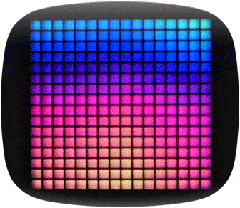Pixels
RGB
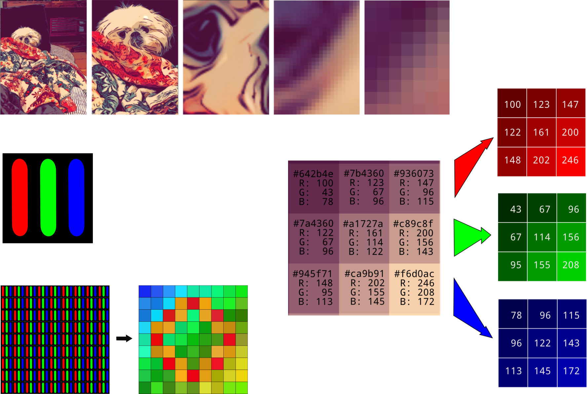Color Depth in RGB

Color Depth in RGB
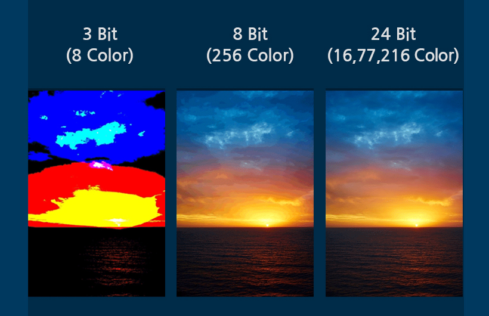Color Depth and
List of Monochrome and RGB Color Formats.
How humans see colors?
How humans see colors?
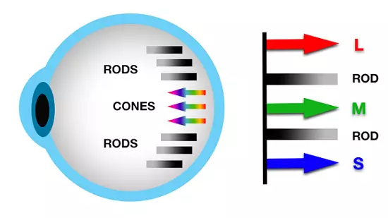How humans see colors?
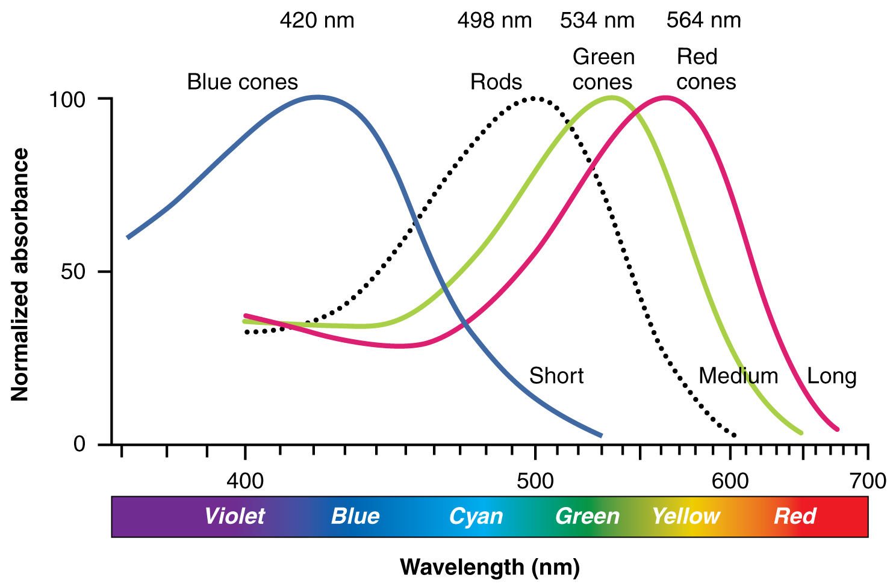How humans see colors?
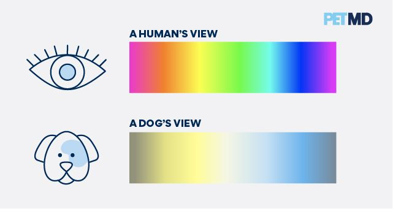Does humans eyes have color bugs?
Does humans eyes have color bugs?
Rates of Color Blindness
| Males | Females | |
|---|---|---|
| Dichromacy | ||
| Protanopia | 1.3% | 0.02% |
| Deuteranopia | 1.2% | 0.01% |
| Tritanopia | 0.008% | 0.008% |
| Anomalous Trichromacy | ||
| Protanomaly | 1.3% | 0.02% |
| Deuteranomaly | 5.0% | 0.35% |
| Tritanomaly | 0.0001% | 0.0001% |
What chromosome do you know?
BBC News - HealthOPN1LW
OPN1LWHow do you see this bird?
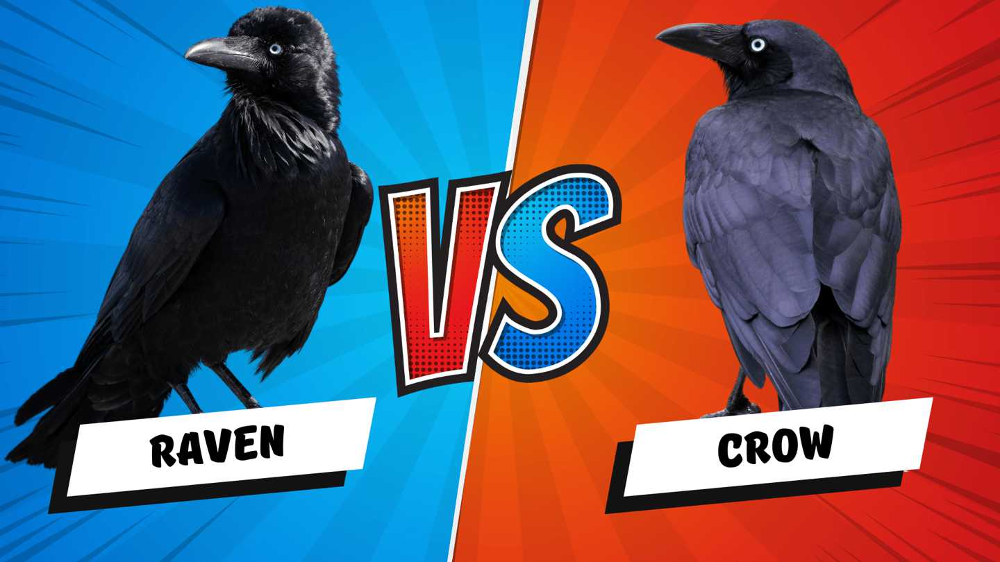How do you see this bird?
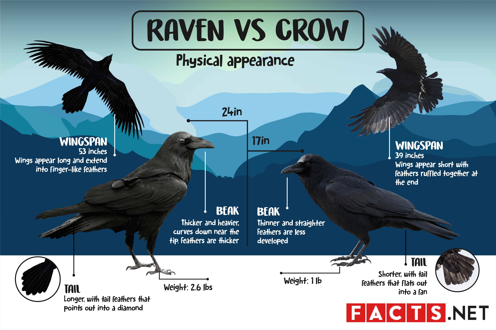How do you see this bird?
How birds see
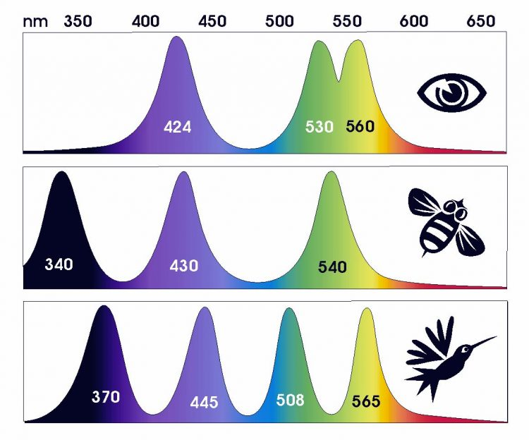Tetrachromacy
How birds see
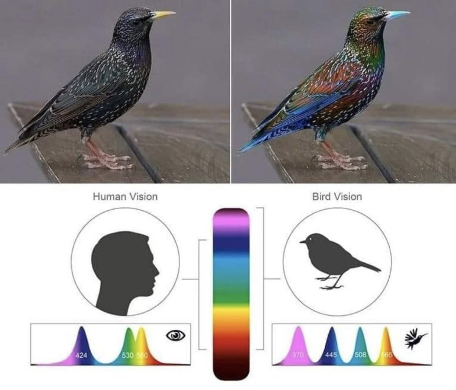Tetrachromacy
How birds see
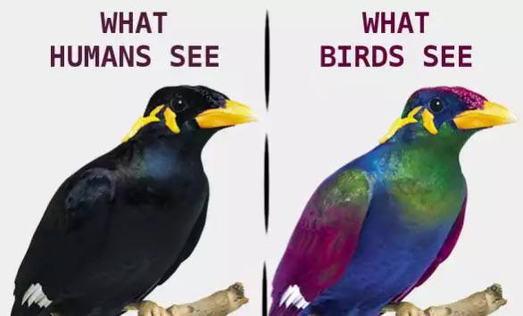Tetrachromacy
How birds see
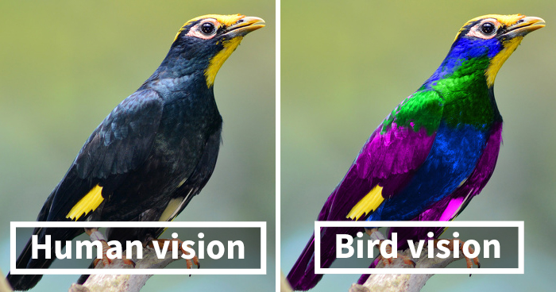Tetrachromacy
How humans see colors?
X-Men are already among us.The World's First Tetrachromat Artist
RGB Model
RGB Model
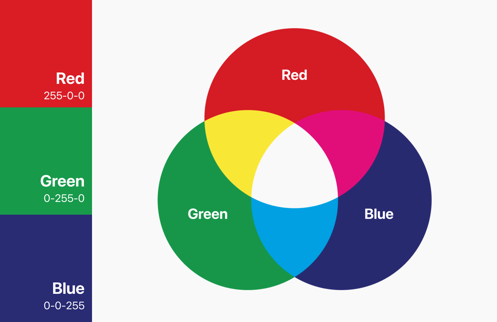RGB Model
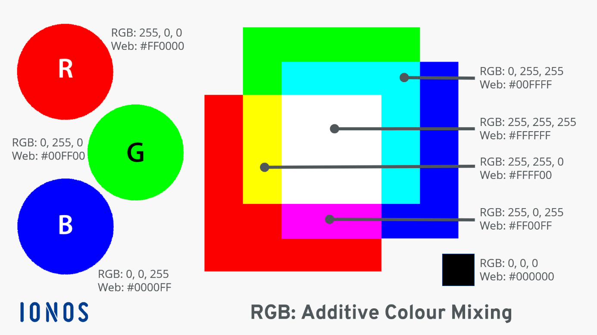RGB Model

CMYK
How to use RGB Model in printers for paper?
CMYK vs RGB
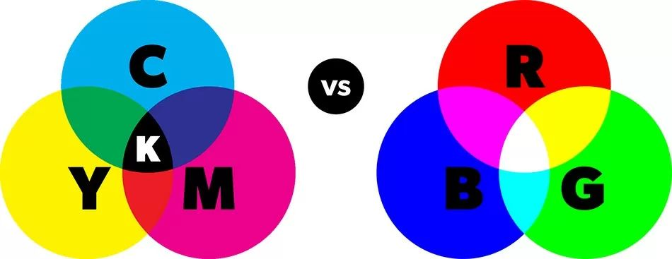CMYK vs RGB
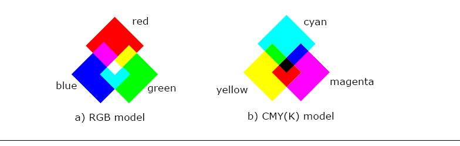CMYK vs RGB
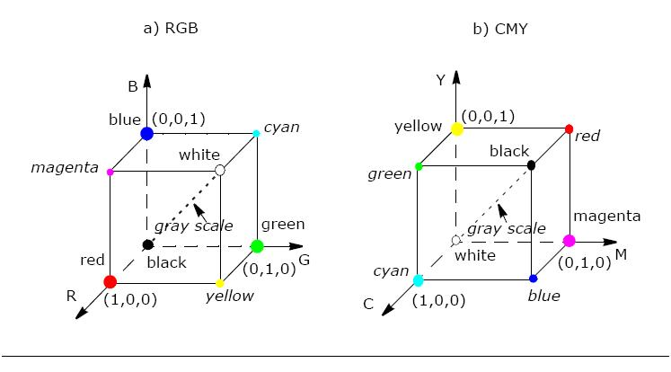CMYK vs RGB
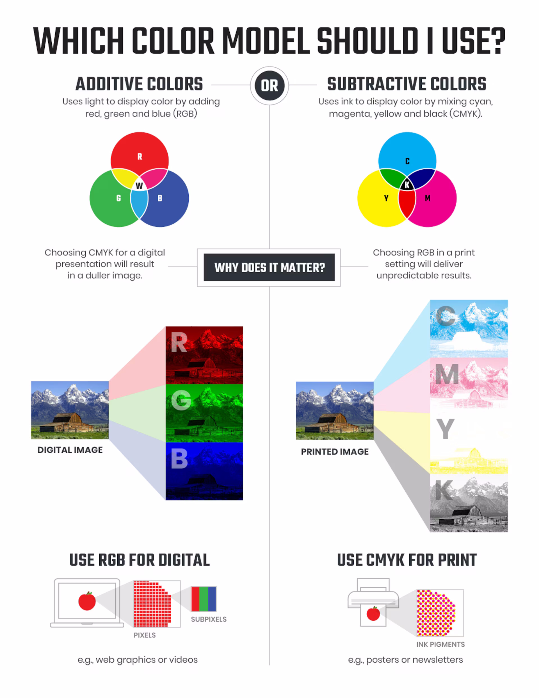HSV
How to use RGB Model to make rainbow effect?
How to use RGB Model to make rainbow effect?

HSV

HSV
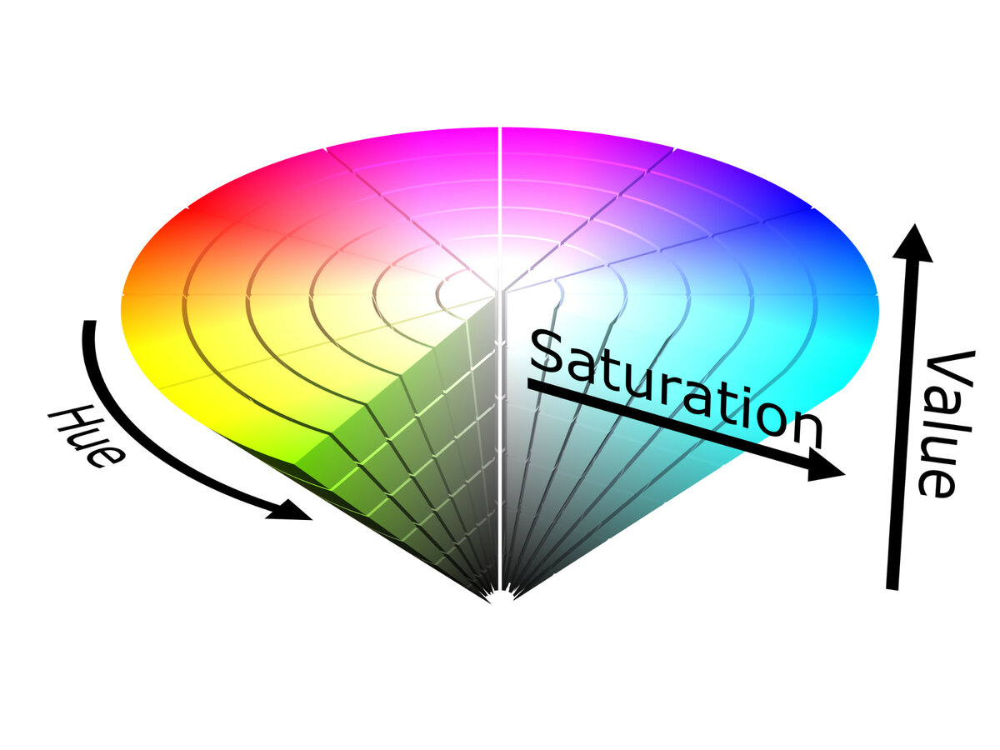HSV
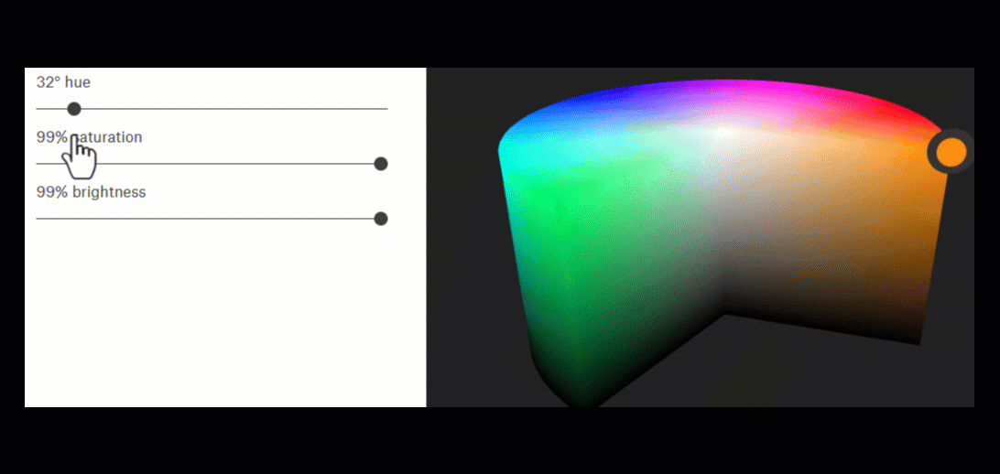HSL
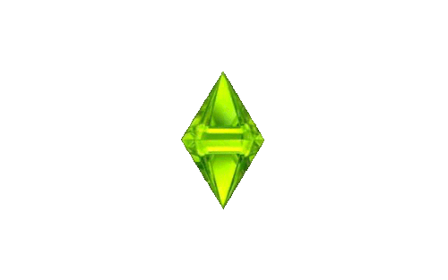HSL vs HSV
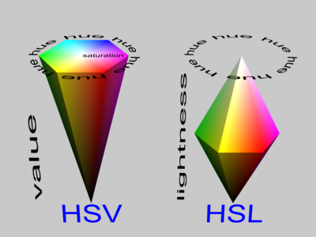HSL vs HSV
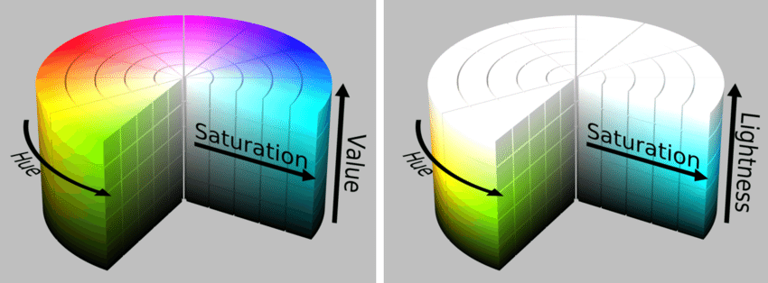HSL vs HSV

XYZ
Mathematically defined color spaces is the CIE XYZ color space (also known as CIE 1931 color space), created by the International Commission on Illumination in 1931.Used for compatibility and transferring between models
Color model
Links:
Other Models: